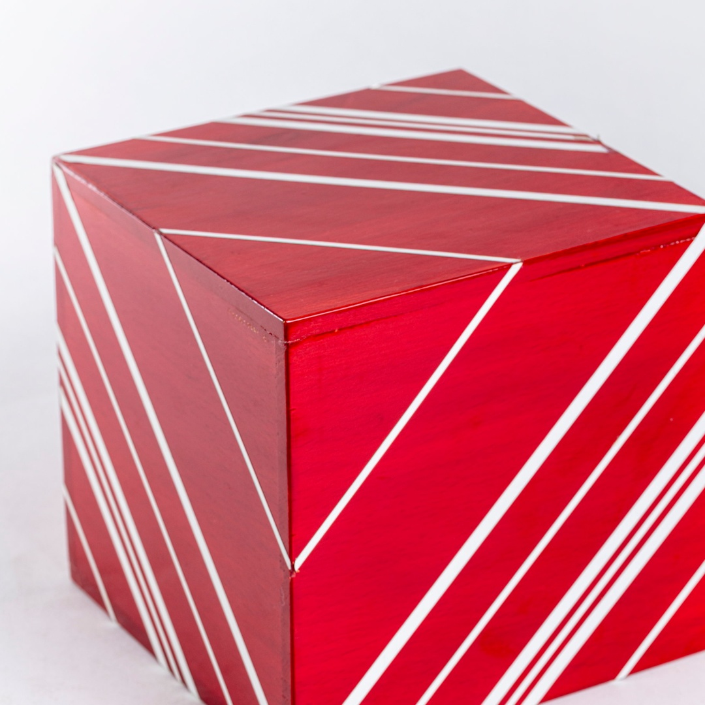

Attilio Marcolli
Biografia
Attilio Marcolli (Milano, 1930-2010), architetto e professore universitario, è stato una figura culturale di primo piano nell’architettura, nel design e nelle arti visive. Decise di diventare architetto all'età di sedici anni, quando diresse i lavori del cantiere per la costruzione dell'asilo Onarmo nell'ex-campo di concentramento nazista di Bolzano. Si formò a Milano negli anni Cinquanta presso importanti studi professionali di architettura, tra cui Chessa, Magnaghi e Terzaghi, Zanuso e BBPR. Nel 1957 aprì il suo studio a Milano con l'architetto Anna Rosa Cotta. Nel 1968 si laureò in Architettura al Politecnico di Milano con una tesi dal titolo *Giulio Carlo Argan: la coscienza europea* (relatore Ernesto Nathan Rogers). Negli stessi anni scrisse articoli per la rivista “Casabella-continuità” e fu membro attivo del gruppo artistico Arte oggi. Nel 1968 tenne un corso sperimentale di “Educazione alla visione” presso l’Istituto d’Arte di Cantù, esperienza da cui nacquero i libri *Teoria del campo* (Sansoni Editori, Firenze, vol. 1, 1971, vol. 2, 1978), utilizzati per decenni negli istituti di istruzione superiore. Nel 1969 conseguì la libera docenza e entrò nel Comitato Scientifico del Centro internazionale Pio Manzù di ricerca sulle strutture ambientali di Verrucchio, coordinato da Giulio Carlo Argan. Dal 1970 insegnò Disegno Industriale nella Scuola Politecnica di Design a Milano, fondata da Nino Di Salvatore, con cui collaborò per trent'anni. Dal 1976 al 1986 insegnò Disegno Industriale al DAMS di Bologna, su invito di Tomàs Maldonado, nell’ambito della Progettazione Ambientale. Nel 1981 espose le sue opere di architettura e arte concreta alla Biennale d’Arte Contemporanea di San Martino di Lupari, opere ora conservate nel Museo Apollonio. Tra il 1981 e il 1983 pubblicò L’immagine-azione in tre volumi (Sansoni, Firenze). Nel 1986 curò l’allestimento della mostra sul colore alla XLII Biennale Internazionale d’Arte di Venezia. Partecipò a numerose mostre d’arte e design, oltre a conferenze nazionali e internazionali.

Interazione della forma (2)
Il termine “cinetico” acquista definitivamente il diritto di cittadinanza nel mondo dell’arte negli anni ’50, quando artisti-teorici come Vasarely e Agam parlano di “arti cinetiche”, di “plastica cinetica” e di “arte cinetica”. A partire dal 1960 l’espressione arte cinetica entra nel vocabolario degli storici e dei critici d’arte e viene utilizzato per definire opere bi e tridimensionali in movimento reale e in movimento “virtuale”, ossia di opere che si muovono effettivamente e opere in cui l’occhio dello spettatore è guidato in modo evidente, vale a dire oggetti in cui i fenomeni ottici del movimento svolgono una funzione predominante o che richiedono una partecipazione attiva dello spettatore, vuoi con il suo spostamento o con la manipolazione che va a modificarne l’assetto plastico.

Interazione della forma (1)
L’opera in scheda è da considerarsi come parte prima di una modularità reiterata, combinata e trasformabile del cubo inteso come solido e struttura da sviluppare. La sua trasformazione si può vedere nell’opera del Museo Umbro Apollonio. In tal proposito si cita dal saggio scritto da Marcolli stesso per la mostra “Arte e Didattica” (Bassano del Grappa, 1987- pag. 58): “Dal punto di vista metodologico (…), ho seguito il metodo pragmatico, detto abduttivo. Il metodo consiste in questo: data una configurazione di base, per esempio la progressione modulare, io abduco tutta una serie di effetti percettivi, come per esempio di spazio, o di luce o di materia (concavo e convesso), o di movimento (come nelle opere di Klee, Vasarely, etc..). Allo stesso modo, dato un cubo e la sua struttura, io abduco tutta una serie di processi di strutturazione: l’esagono volumetrico come figura interpretante; la successione poliedrica, cinetica dei solidi tetra-ottaedrici compreso il dymaxion; la successione dei solidi penta-icosaedrici; il close packing di poliedri e la loro modularità spaziale; le tensegrity o strutture tensionali; (…). E questo lavorando solo ed unicamente sul cubo e la sua struttura. E’ il metodo che veniva seguito dai grandi strutturalisti costruttivisti come Wachsmann, Fuller, ecc, e che è giusto continuare ad esplorare